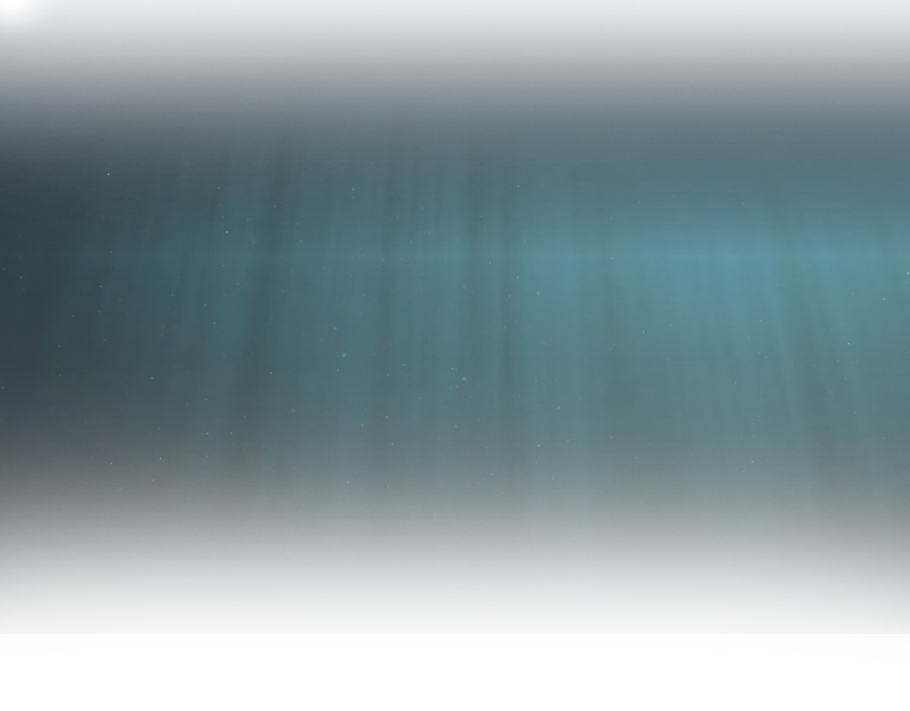
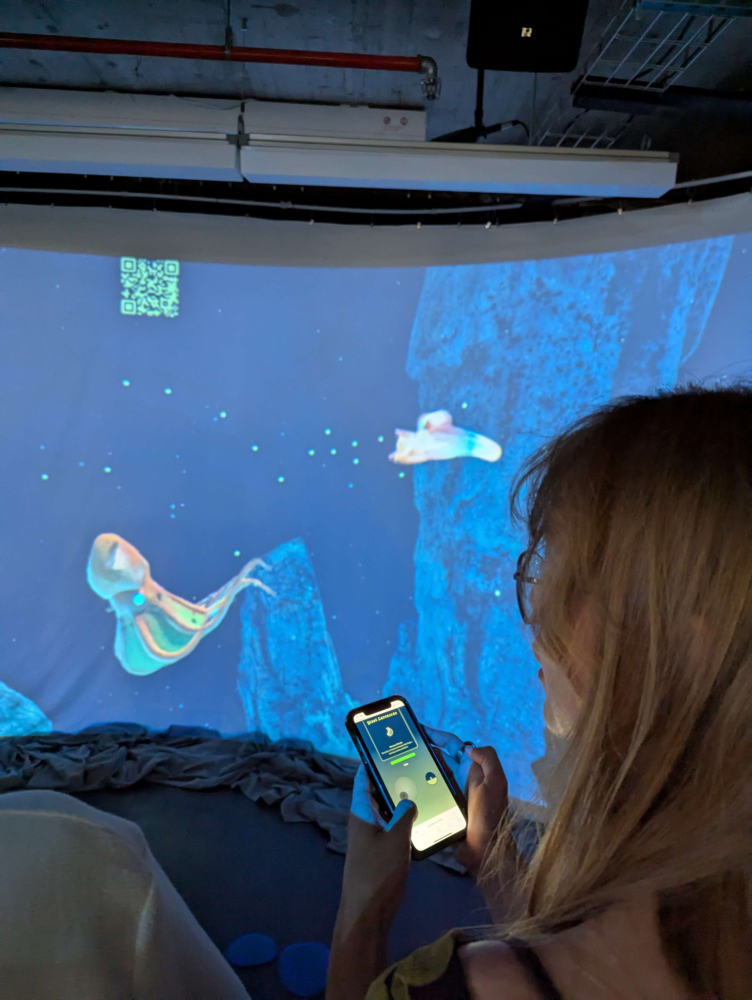
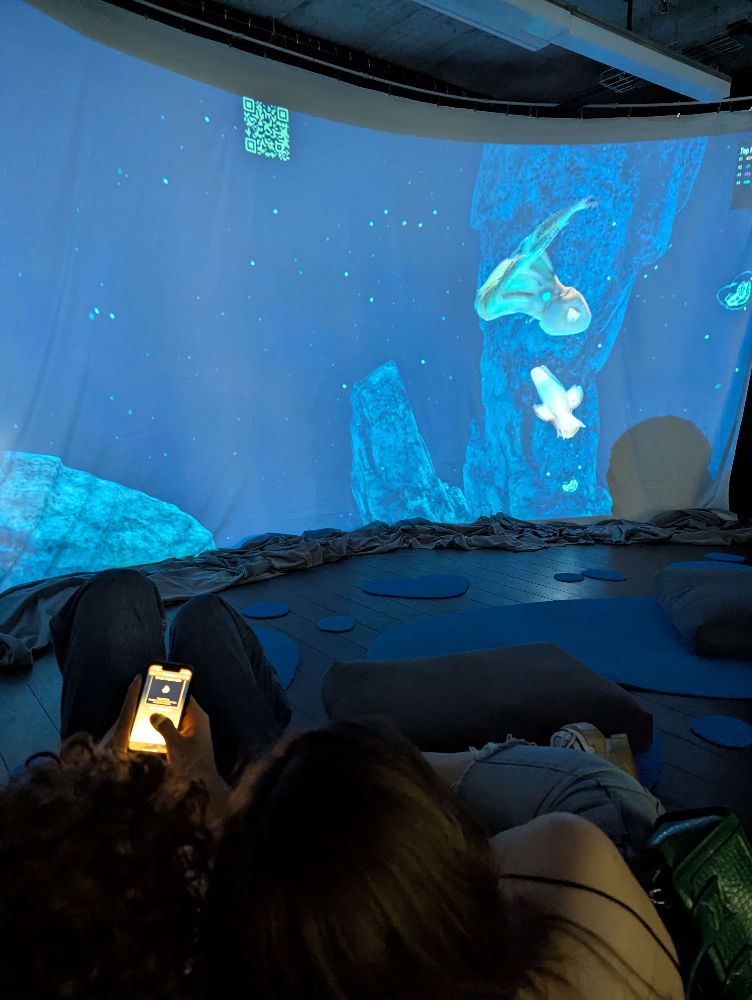
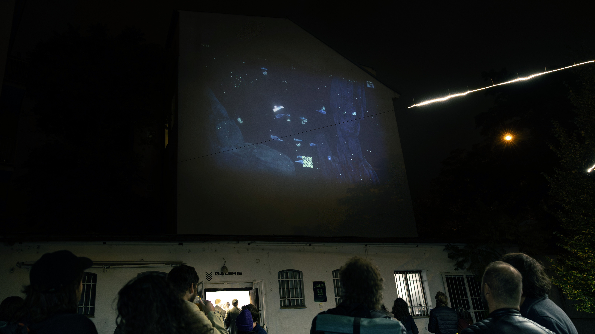
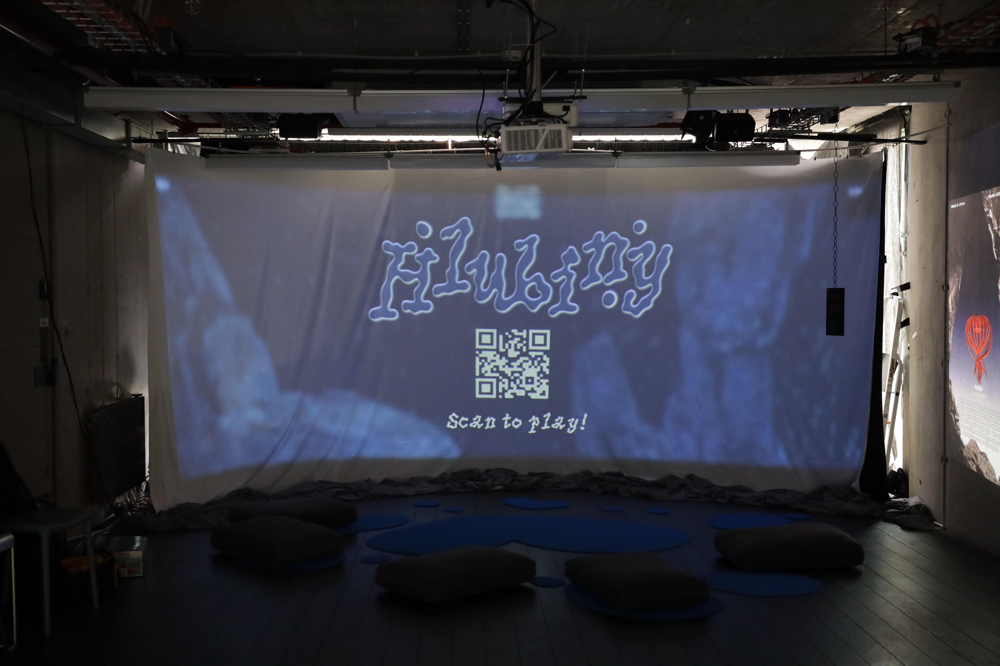
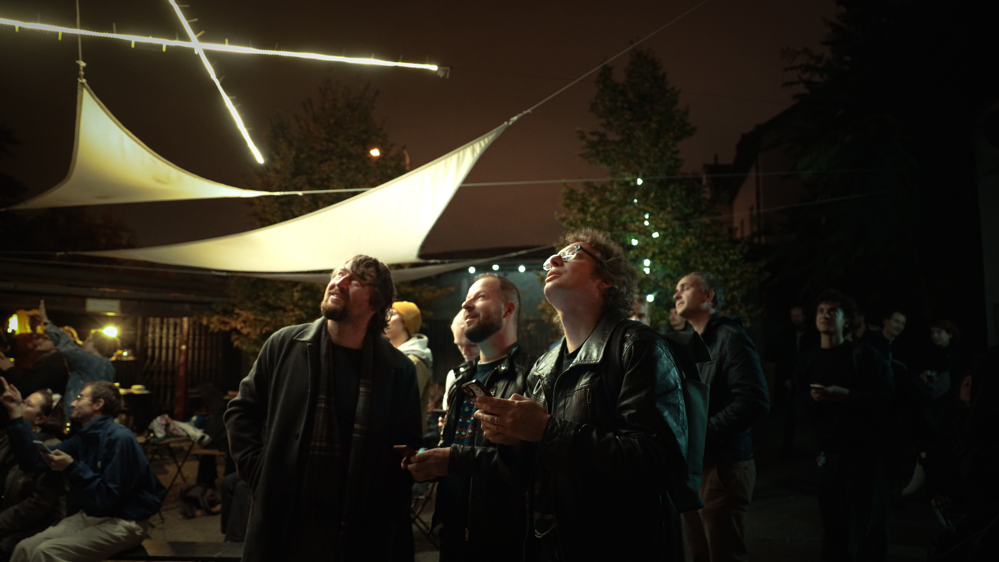
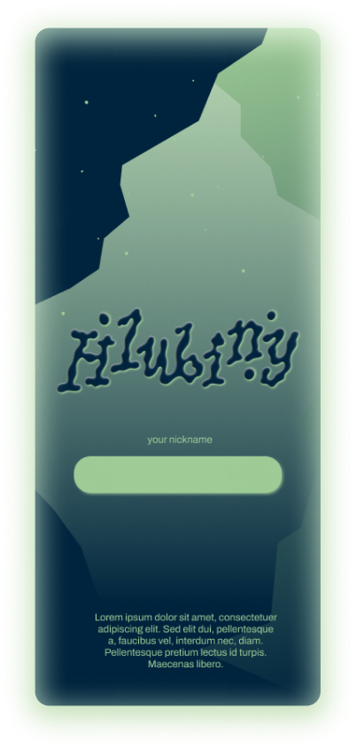
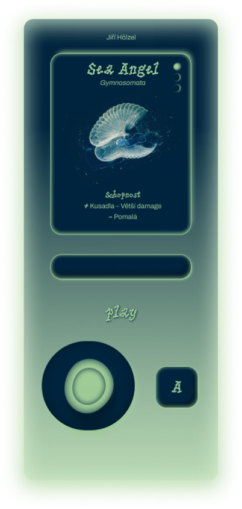
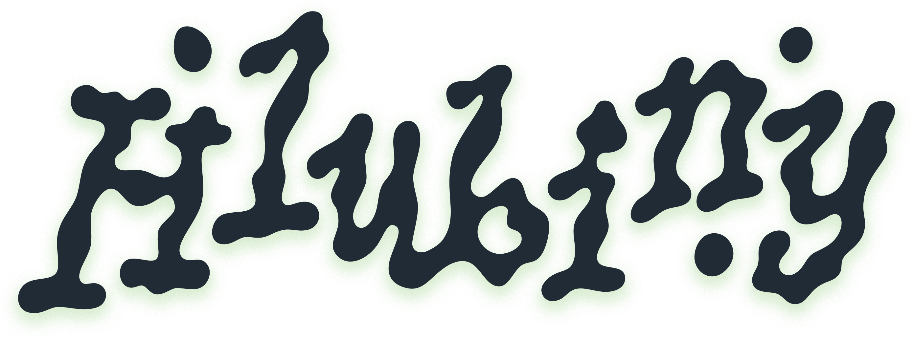

Interaktivní hra z prostředí hlubokomořského ekosystému
pONOŘ SE do HLUBIn

O PROJEKTU
Hlubiny jsou interaktivní multiplayerový zážitek, který propojuje digitální hru s přírodními principy.
Hráči se ujímají rolí hlubokomořských tvorů a soupeří o přežití, růst a dominanci ve sdíleném prostředí. Herní mechaniky vycházejí z reálných biologických vlastností jednotlivých druhů a umožňují během hry postupovat skrz různé organismy.
Herní mechaniky vycházejí z reálných biologických vlastností jednotlivých druhů a umožňují během hry postupovat skrz různé organismy.
Projekt usiluje o vzdělávací a vizuální
zážitek ve velkoplošné projekci.





JAK TO FUNGUJE
Hráči naskenují QR kód nebo navštíví hlubiny.online, zvolí si startovní organismus a pak použijí telefon jako virtuální joystick k ovládání svého tvora na velkoplošné projekci.


Počas hry se živíte mořským sněhem.
Když zemřete, rozpadnete se na mořský sníh a stanete se součástí oběhu.
INSPIRACE
Inspirováno hrami jako Spore a Agar.io, projekt využívá známou arkádovou mechaniku jako rámec pro průzkum hlubokomořských organismů.
Lidstvo má detailnější mapy Marsu než oceánského dna.
Mimozemské formy života už možná existují v hlubinách — ale ničíme je rychleji, než stíháme prozkoumat.
Kontaktujte nás
